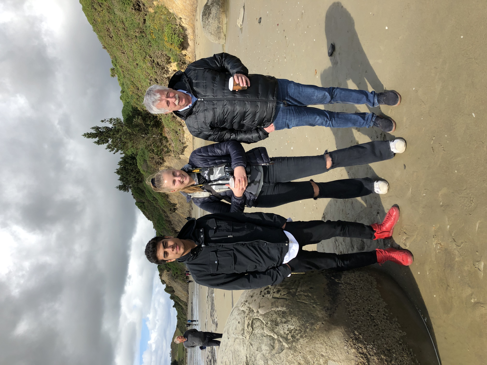
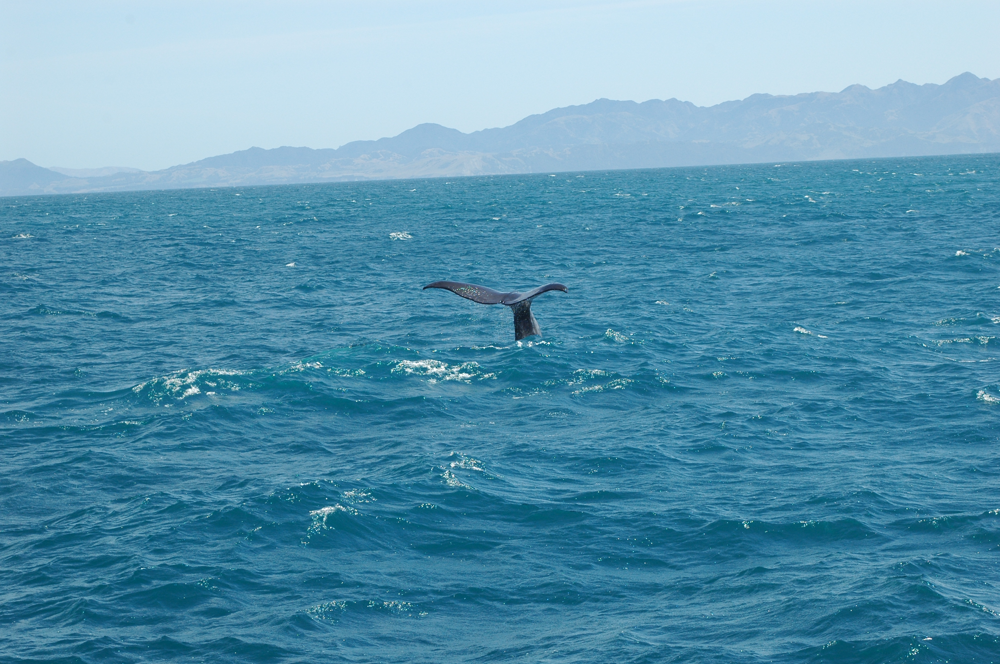
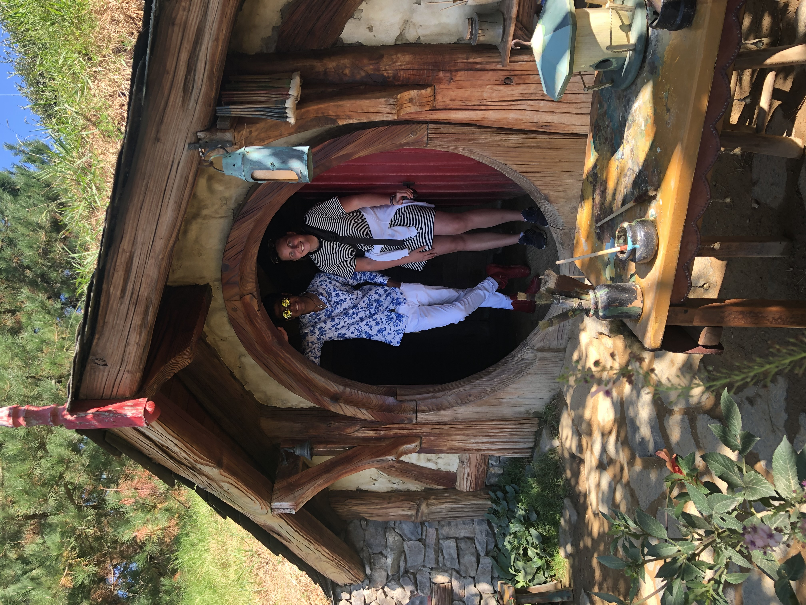

Nu ska ni få läsa lite från min otroliga resa till Nya Zeeland
2019 tillsammans med min älskade Farmor och hennes bror och hans
son Oscar!
Queenstown
18-19 Februari 2019
Att vi är framme efter 26h flygtid plus väntan var det verkligen
värt!! kan inte beskriva hur vackert det är här!!

Igår var det en heldag med Lord of the rings, vi åkte Toyota och
Land Rover Defender genom skog, floder, öppna landskap och
samhällen. Det var magiskt men filmerna är annorlunda nu då man
fick veta inre detaljer som är sjuka!! Idag ska vi hämta bilen som
vi ska åka vidare med imorgon!
Dunedin
21 Februari 2019
Nu har vi kommit till Dunedin som är en ganska stor stad vid
havet.

Vi ska vara här tills på söndag (alltså 3 nätter).Vi kom hit vid
ca 14 och har tagit det rätt lugnt hela dagen då vi varit väldigt
trötta. Imorgon bär det av på lite äventyr i staden för att sedan
äta middag med en god vän till Oscars pappa!!
Christchursch
24-25 Februari 2019
Idag har vi nått fram till Christchurch och den längsta bilfärden
är avklarad(36mil) Vi missade att snacka om sista dagen i Dunedin
där vi åkte ut till Royal albatross center där vi fick lära oss om
albatrosser men vi fick knappt se några tyvärr men bara färden dit
va en upplevelse🇦🇺 Vägarna va säkert inte mer än 2 meter breda och
vid sidorna stupade det ner 100 meter!! Det va läskigt men vi
klarade det!! Resten av dagen nu i Christchurch spenderas på
gymmet och middag på hotellet då vi laddar upp inför en
heldagsutflykt imorgon med ännu mer sagan om ringen

Idag hade vi en full day lord of the ring Edoras tour som började
med spö regn inne i city i Christchurch men som ändrades till
strålande sol desto längre ut mot bergen vi kom. Det var en
fantastisk dag med otroliga utsikter, allt från öppna åkrar till
snötäckta bergstoppar. Avslutade touren med mysig champagne
picknick som Oscar sätt fram emot!!
Kaikoura
27 Februari 2019
Gårdagen spenderades i Kaikoura där vi var på valsafari och fick
se två sperm whales, delfiner, albatrosser och sälar.

Det var fantastiskt väder och väldigt coolt att se (Jag (Victoria)
hatade det tills vi kom till delfinerna o sälarna på grund av att
det var mindre vågor där). På kvällen åt vi middag på en mysig
resturang och sedan gick vi till motellet för att sova. Idag så
åkte vi till Picton och har mest tagit det lugnt majoriteten av
dagen. Bor i ett jättefint apartment hotel som har två våningar.
Imorgon åker vi över till Nordön!
Wellington
1 Mars 2019
Nu är vi i Wellington som är huvudstaden här i Nya Zeeland. Igår tog vi färjeöverfarten från picton till Wellington som var otroligt vacker inomskärs men väl ute på öppethav så var det enorma vågor så det var inte lika roligt. I Wellington så hade vi idag en halv dags tur med lord of the rings till först en vacker utsiktsplats sedan lite olika scener som spelades in i en skog för att därefter åka till Weta studios där de gjorde all utrustning och modelleringar osv till alla filmerna plus massor av andra filmer också. Imorgon så åker vi till Tongariro National Park som kommer att ta hela dagen då det är en lång bit att köra
Whakapapa
3 Mars 2019
Igår så stannade vi en natt i Whakapapa på national park, där tog
vi det bara lugnt eftersom det var en 6h lång bilfärd.

Vi solade och åt en god middag på hotellet.Idag åkte vi till Taupo
som var en 1,5h timmes bilfärd bara, väl framme så åt vi lunch på
en mysig italiensk resturang i staden och sedan gjorde alla lite
själva vad de ville
Rotorua i Auckland
5 Mars 2019
Nu är vi på vår sista plats innan Auckland

och det är Rotorua. Vi kom hit igår och anlände till B&B där vi
skulle bo. Jättemysigt och en jättetrevlig man som ägde stället.
Vi kände oss direkt som hemma vilket var så skönt förutom att det
var huur varmt som helst i huset. På kvällen tog vi oss in till
stan och ät middag på ”The Fat Dog”. Idag så har vi gått runt i
stan och shoppat lite och nu är vi påväg till Maori Kvällen som vi
är super taggade på!! Imorgon åker vi till Matamata för Hobbiton
och sedan vidare till Auckland!
Maori och Hobbiton Dagen
9 Mars 2019

Lite bilder från maori kvällen och sedan från sista heldagen på
Nya Zeeland då vi var på Hobbiton movie set. Toppen på hela resan
och otroligt fint väder. Nu sitter vi här på Köpenhamns flygplats
och inväntar sista flighten hem. Denna resan har varit något av
det häftigaste vi varit med om och alla borde verkligen någon gång
i sitt liv åka till Nya Zeeland för det är ett fantastiskt land!!